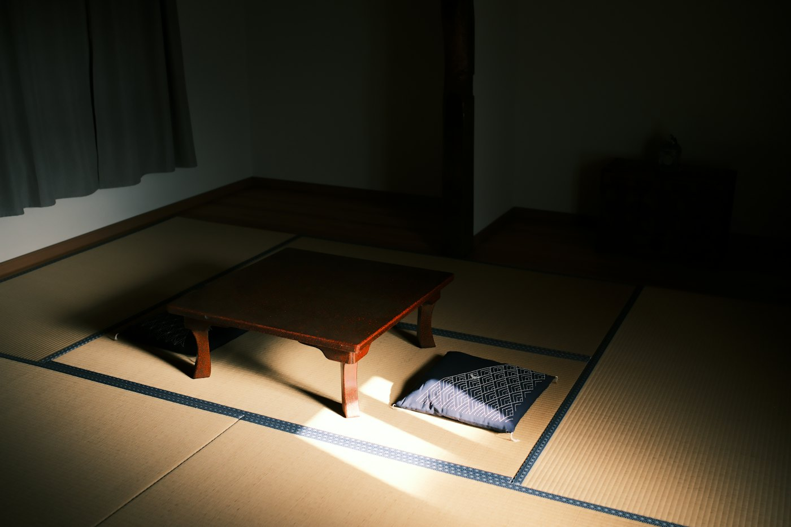
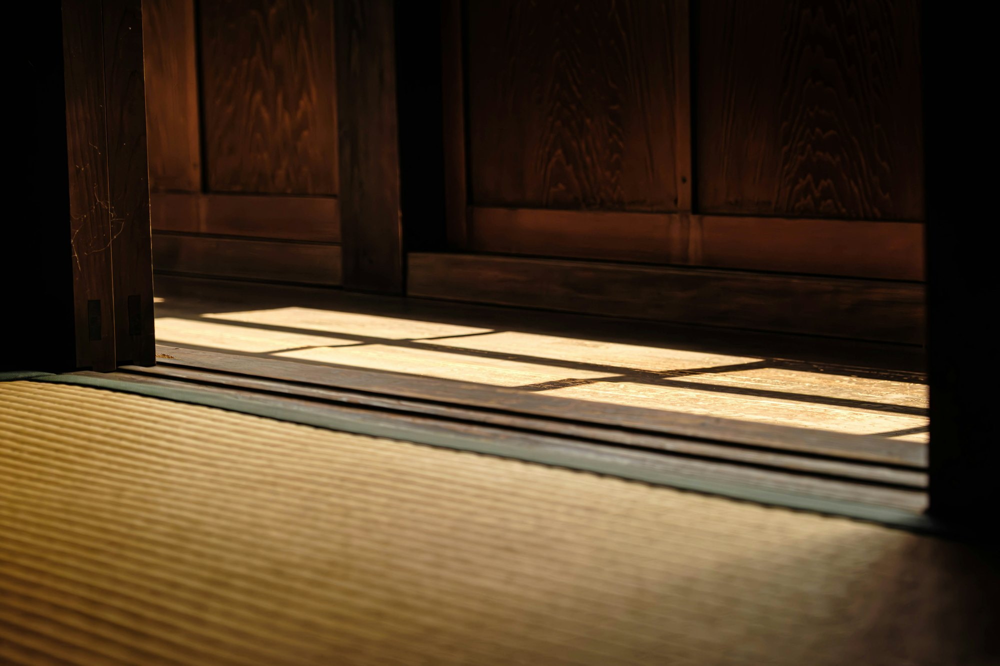

表替え・裏返し
日焼けや擦り切れが気になったら。畳床はそのままに、表を張り替えて新しい香りに。

畳・内装 新宿区下落合
昭和5年、目白の地で創業。新畳・表替えから縁無し畳、刺繍畳まで、三代目が承ります。
畳・内装 新宿区下落合
昭和5年、目白の地で創業。新畳・表替えから縁無し畳、刺繍畳まで、三代目が承ります。
日焼けした畳をはがして
畳は、部屋の寸法を測り、一枚ずつ合わせてつくります。古い畳をはがし、新しい畳を敷くまでを、スクロールでご覧ください。
3Dのイメージです
昭和5年、初代・小沼光造が東京・目白で創業しました。昭和22年に関東製畳有限会社となり、現在は三代目・小沼光則が店を継いでいます。
人気の縁無し畳や琉球畳から、置き畳、刺繍畳、内装工事まで。ご予算に合わせてご提案し、お見積もりは無料です。

日焼けや擦り切れが気になったら。畳床はそのままに、表を張り替えて新しい香りに。
目積み表のすっきりした畳で、洋室にもなじむ和の空間に。
畳表に図柄を刺繍した、格調ある一枚。床の間や玄関の飾りにも。
現在のホームページに掲載されている価格です（1畳あたり）。畳の状態や枚数で変わりますので、下見のうえでお見積もりします。
…
| 営業時間 | 8:00〜20:00 |
|---|---|
| 定休日 | 日曜・祝日 |
| 時間外 | ご希望により、定休日や夜間も承ります |
畳の枚数や部屋の広さがわからなくても大丈夫です。お電話かメールでご相談ください。